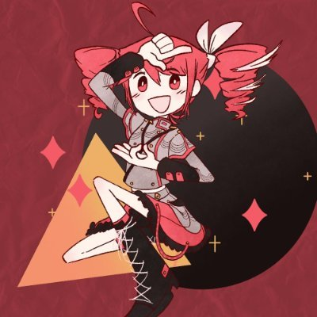

Trinity
i'm trinty! i'm the lead programmer for jamiepedia. i'm responsible for like the majority of this site's back end functionality (like pretty much every major feature of this site, i'm responsible for lol). if you ever encounter any issue, probably reaching out to me is the best way to get it fixed. i don't really have any kind of social media pressence right now, but you can find me on bluesky and discord as xtra3678.
